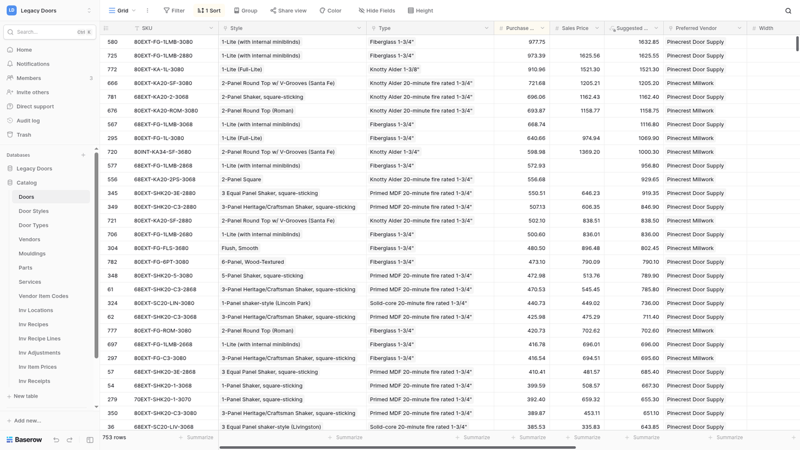

Case study: building the ERP for an 11-person door and trim distributor
Spencer Brimley · Baserow + n8n + Python + QuickBooks Online · Aug 2022 – Oct 2026
At a glance
- Company: Aztec Doors & Trim (Legacy Doors & Trim since June 2026), Mesa AZ. Interior and exterior doors, mouldings and hardware.
- My role: General Manager — and the only person building the system: design, build, rollout, training and support.
- Stack: Baserow (open-source no-code database) for the data and screens, n8n for 29 automations, Python for SKU matching and accounts-payable checks, QuickBooks Online as the accounting system. Self-hosted on a Linux server I run (rootless Podman containers behind a Caddy reverse proxy).
- Scale: 31 tables in two databases, 32 table-to-table links, 64 saved views. About 3,100 invoices, 3,100 purchase orders, 800 customers, 1,400 logged calls, and a catalog of about 900 items with 1,428 vendor part numbers cross-referenced.
- Adoption: every employee used it, and three were daily power users.
- Results: an estimated 10+ staff hours saved a week, measured by timing the manual steps each automation replaced. In the week of Nov 8, 2026 it handled about 1,100 business automations a day.
The problem
The business ran on paper and QuickBooks. QuickBooks held the money, but nothing tracked the work between a quote and a delivery, so three things kept going wrong:
- Backorders weren't passed on to customers.
- Items never got ordered.
- Customers weren't told when their orders were ready.
The catalog had no SKUs either. The same door was written a dozen ways ("2-6 6-8 2-Panel Monroe HC"), so prices, reorders and vendor matching all depended on someone's memory.
How I built it
- I started small. The first version (August 2022) was a task board on Vikunja, an open-source task manager, to track orders that used to live on paper. Once the process was clear I rebuilt it as a proper database on Baserow.
- I mapped the work before building anything. I followed an order from estimate to invoice, purchase order, receiving, production, delivery or will-call, and payment, and noted who touched it at each step.
- I designed the data model around that flow, in two databases: Operations (17 tables: Estimates, Worksheet Lines, Invoices, Purchase Orders, Hardware Orders, Production, Deliveries, Will Calls, Installs, Customers, Vendors, Notes, Call Log, Bill Discrepancies, Cost Edit Log, and two support tables) and Catalog (14 tables: Doors, Door Styles, Door Types, Mouldings, Parts, Services, Vendors, Vendor Item Codes, and an inventory module).
- I gave the catalog SKUs. Every item got one, and each vendor's own part numbers map to it (1,428 cross-references). I wrote a Python resolver that reads a shop-floor description and returns the SKU, and flags anything ambiguous for a person to review instead of guessing.
- QuickBooks stayed the book of record. I didn't replace accounting. Baserow runs operations, and n8n keeps the two in sync through QuickBooks webhooks and API calls, so staff never type the same thing into both.
- I built screens around each person's job. Each role gets its own views (61 grids, 2 calendars, 1 kanban board): the shop sees production, the driver sees deliveries, the office sees what still needs ordering.

The automation layer (29 n8n workflows)
| Area | Workflows | What they do |
|---|---|---|
| Accounting sync | 8 | QuickBooks webhooks, customer sync into Baserow, price sync, routing estimate worksheets into QuickBooks estimates and invoices, review and total checks |
| Shop floor | 8 | Create production and delivery lines from invoices, batch status updates, a weekly production calendar, will-call and invoice status updates |
| Purchasing & pricing | 6 | PO updates, "no acknowledgement" and "not ordered" alerts, bill-intake alerts, price lookup and cost edits (with an audit log) |
| Customer contact | 5 | Pop up the caller's account on screen when the phone rings, phone events from Podium, alerts for estimates missing a customer, quick notes |
| Operations | 2 | Heartbeats for scheduled jobs, plus an MCP endpoint that lets an AI assistant query the ERP |
Two Python components sit beside n8n: accounts payable (reads vendor bills as PDFs, matches each line to our PO, records price and quantity differences in a Bill Discrepancies table for review, and enters approved bills into QuickBooks Online) and the SKU resolver (step 4 above).


Rollout and training
- I trained every employee one-on-one, then presented SOPs and job aids to the whole team.
- I trained three power users early, so the rest of the staff had someone to ask besides me.
- The hardest part was the SKUs. Making the catalog consistent meant retiring a lot of old codes, and for a while staff were annoyed at learning new ones. Once they had, they liked the consistency, and it made them faster.
Results
- Time: an estimated 10+ staff hours saved a week. I timed how long each step took by hand (print a sheet, scan it, write it on the calendar) and compared it with the automated version. I think the estimate is conservative.
- Faster quotes: estimates are built from catalog SKUs with current prices and routed into QuickBooks automatically.
- Customers kept informed: customers got text messages about backorders and when their orders were ready — the two things that used to fall through the cracks.
- Nothing forgotten: reminders to order materials, and alerts when a PO was never placed or never acknowledged.
- Fewer vendor errors: order acknowledgements and vendor bills are checked against our POs for price and quantity differences before anyone pays.
- One price everywhere: prices stay in sync across QuickBooks, the catalog and vendor price sheets.
- Volume: in the week of Nov 8, 2026, about 6,900 business automation runs (about 1,100 a day) plus 3,200 monitoring checks, with no errors recorded in that window.
What happened next, and what I'd do differently
After the 2026 acquisition, the new owner decided to run the business on paper again, so the system is being retired. That's the owner's call, and it taught me two things I now plan for from day one:
- Win over the decision-maker as well as the users. Daily use by staff doesn't protect a system if the person who signs off on it isn't comfortable with it.
- Build it to be handed over: documentation, simple admin screens, and a clean export, so a new owner can keep it, hand it to someone else, or move off it without losing anything.
Screenshots are from a demo copy of the system with fake names, contacts and prices; SKUs and product descriptions are real. No customer records are shown anywhere.